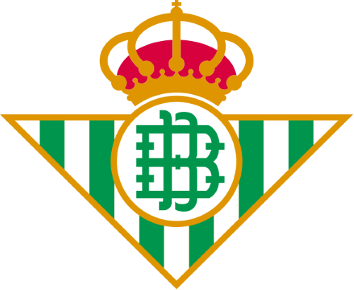
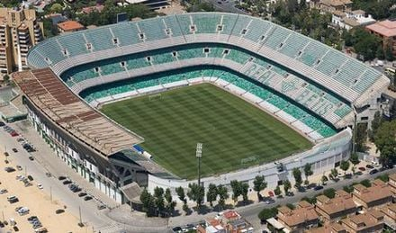

Treinador: Manuel Pellegrini
Manuel Pellegrini é um treinador chileno nascido em Santiago, reconhecido pela sua serenidade imperturbável e pela capacidade de conferir identidade e estabilidade a projetos de elite.
Estádio:Benito Villamarín
O Real Betis joga no Estádio Benito Villamarín, um recinto imponente e vibrante com capacidade para cerca de 60 mil lugares, famoso pela sua atmosfera fervorosa e por ser o coração pulsante de uma das massas adeptas mais fiéis do mundo.

Estilo de Jogo:
O estilo de jogo de Manuel Pellegrini no Real Betis continua fiel aos princípios de posse de bola e pendor ofensivo, tendo evoluído para uma identidade mais controlada e calma no tempo de jogo. Conhecido como "O Engenheiro", Pellegrini privilegia o futebol técnico e a fluidez entre setores.
"Viva el Betis manque pierda!"